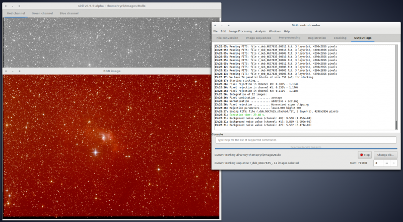

[Software / Hardware]
Libre + Astronomía
Por Osvaldo Salazar
Osvaldo Salazar
www.salazarysanchez.com
osvaldo@cryptolab.net
@Osvaldo_Salazar
Stellarium
Virtual moon atlas
SkyChart / Cartes du Ciel
Play
https://play.google.com/store/apps/details?id=com.smeunier.jupitersmoons&hl=en
F-Droid
SkyMap
Code NASA

Github
Original Apollo 11 Guidance Computer source code for the command and lunar modules.
Apollo
Guidance
Computer
(AGC)
AGC:
* Procesador que alcanzaba 2.048 MHz
* 2 kB de RAM
* 32 kB de ROM
Un procesador de smartphone de 1000 mhz y 512 MB de RAM, tiene más RAM que el AGC
AGC vs Arduino 1
16 Mhz reloj
32 kilobits ROM
2 kilobytes RAM
86 pesos
RAM 32 Gigas...
... ¡Un millón más grande en RAM!
AGC vs Raspberry-pi
700 pesos
4 nucleos de 1.2 Ghz
1 Giga RAM
Procesador 64 bits
... ¡4800 veces más grande!
Margaret Hamilton

Radioastronomía
El principal objetivo de CASPER es simplificar el flujo de diseño de la instrumentación de radioastronomía promoviendo la reutilización del diseño a través del desarrollo de hardware y software de código abierto independientes de la plataforma.
https://casper.berkeley.edu/
Image
Reduction and
Analysis
Facility
Un software de propósito general para la reducción y análisis de datos astronómicos.
http://iraf.noao.edu/
NOAO Mosaic Data Handling System
